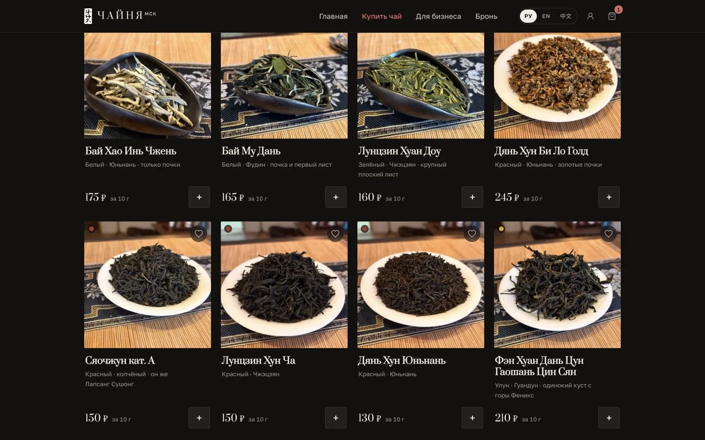
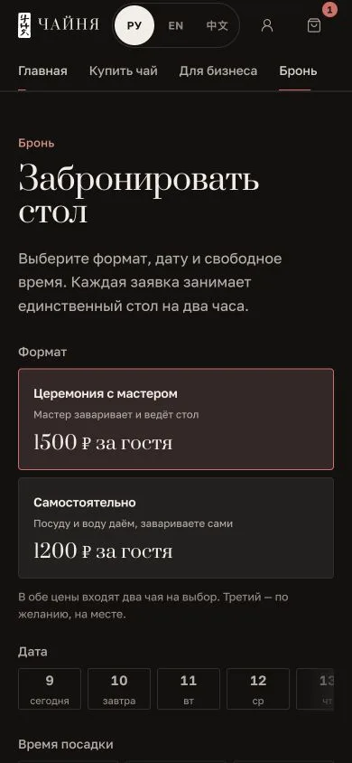

Working user journeys are live on chainya.ru in three languages.
E-commerce · local business · Moscow
Chainya — online shop, orders and booking
A website for a Moscow tea house where guests can choose tea, place an order, book its single table or send a corporate enquiry. Returning guests get an account; the interface works in Russian, English and Chinese.
 site is live
site is live32published products with prices and stock
3languages: Russian, English and Chinese
4journeys: shop, booking, B2B and ceremonies
254server-side automated tests currently pass
case status
open it nowA live commercial website
The storefront connects to orders, booking, customer accounts and owner operations.
Prices, stock, free time slots and payment confirmation are not trusted to the browser.
One brand, four reasons to visit
Each visitor starts with a distinct intent instead of decoding one long, universal page.

Retail
Choose tea for home
Catalogue, search, filters, favourites, pack sizes and a cart.

Offline
Book the table
A clear ceremony format, capacity, address and available time slots.

B2B
Request a supply
A separate path for cafés, restaurants and offices with a Telegram enquiry.

Events
Invite a tea master
Private, authored and off-site ceremonies stay separate from the shop.
guest and team journey
From intent to an order, booking or enquiry
Four journeys start differently but converge on a server-verified action and a clear next step.
The guest chooses a goal
Shop for tea, book the table, request supply or invite a master.
The intent becomes concrete
The cart stores items; booking stores a date and time; B2B stores the enquiry context.
The server checks critical data
Prices and stock for orders, and conflict-free time slots for bookings.
The outcome is recorded
A signed callback confirms payment; orders and bookings return to the account.
Payment confirmed
Only the verified contents and payment status are stored.
Time slot secured
The two-hour slot cannot overlap another booking.
Context reaches the team
B2B and off-site ceremonies stay separate from the retail cart.
Interfaces from the live site
Current screenshots contain no orders or personal data. The wide view shows the catalogue; mobile shows booking.
Open site ↗

What works behind the storefront
The project also includes customer accounts and owner operations for orders, booking, enquiries, products and integrations.
Orders do not trust the browser
The server rechecks price, stock and cart contents; only the payment provider confirms a successful payment.
One database writer
The public layer is separated from data operations, and one process writes to SQLite to protect orders during updates.
Releases can roll back
Each release starts with a snapshot and health checks; a failed check returns the previous version.